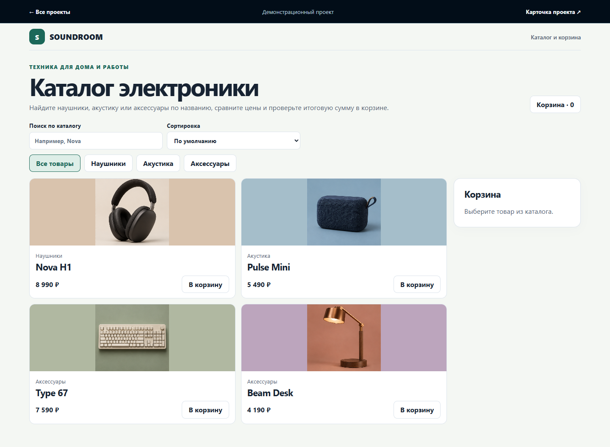
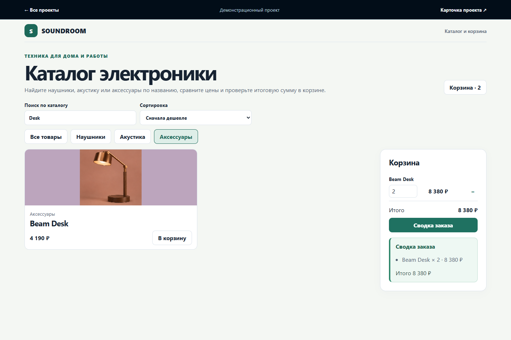

Интернет-каталог электроники
Для магазина, где покупатель должен самостоятельно отобрать товары, собрать корзину и проверить стоимость перед заказом.
Что умеет решение
В каталоге есть поиск по названию и категории, фильтр по категориям и сортировка по цене. В корзине можно менять количество и проверять состав и стоимость заказа.
Попробуйте в демо
Выберите «Аксессуары» и сортировку «Сначала дешевле». Найдите Beam Desk через поиск, добавьте лампу, измените количество на 2 и откройте сводку заказа.


Проект работает в браузере на тестовых данных. Сторонний аналог на GitHub ↗


Визуальный ориентир — каталог Sony. Изображения товаров созданы для этого демо.